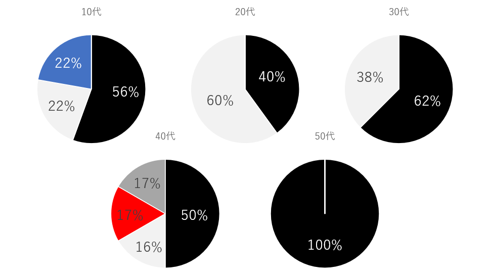
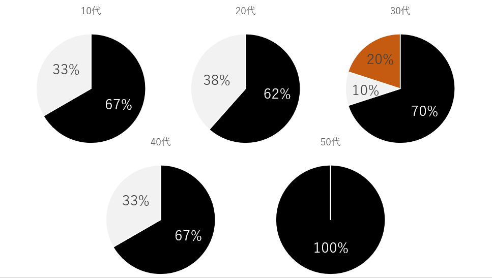

移動観察
体型との関係
気温が低く、肌寒いにも関わらず、半袖を着ている人は少なからずいる。
太めな体型の私の友人は寒い中半袖で生活することがあったので、太めな体型な人だけが、寒い中半袖を着ることがあるのではないかと思い調査した。

こちらは、半袖か長袖か分けた円グラフである。
今回の調査では女性で半袖を着ている方はいなかったので、男性のみ担っている。
結果は長袖46人で、半袖が3人だった。

こちらは、半袖の人の体型を分けた円グラフである
結果は、太めの体型二人、細めの体型1人となった。
まとめ
やはり体型によって着られる服装との関係性はある。